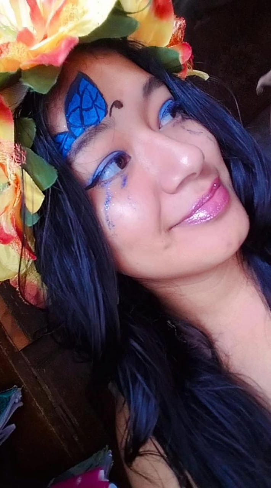
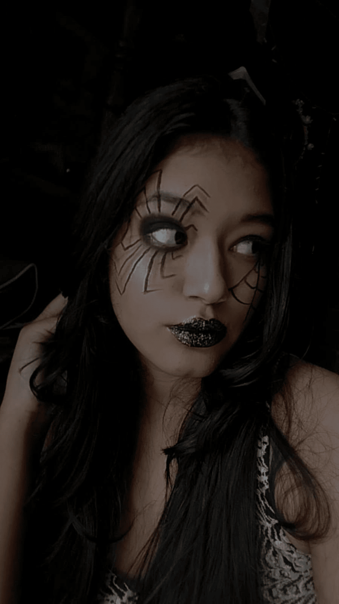
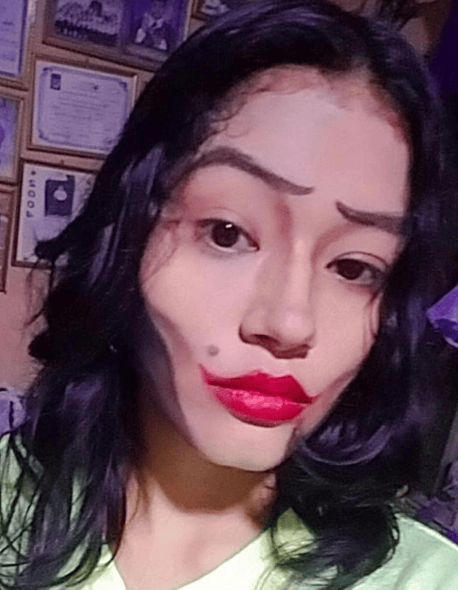
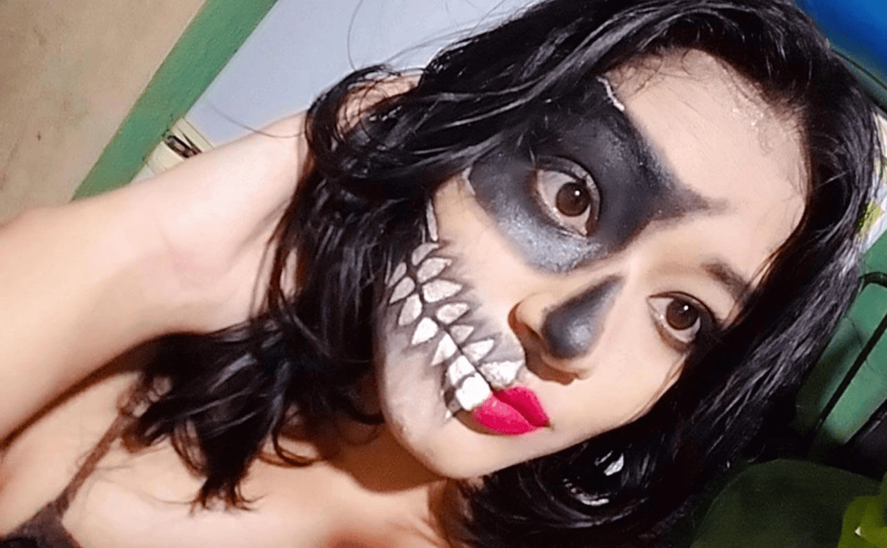
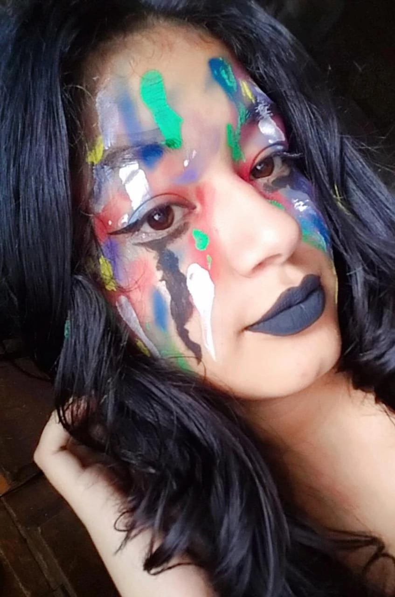
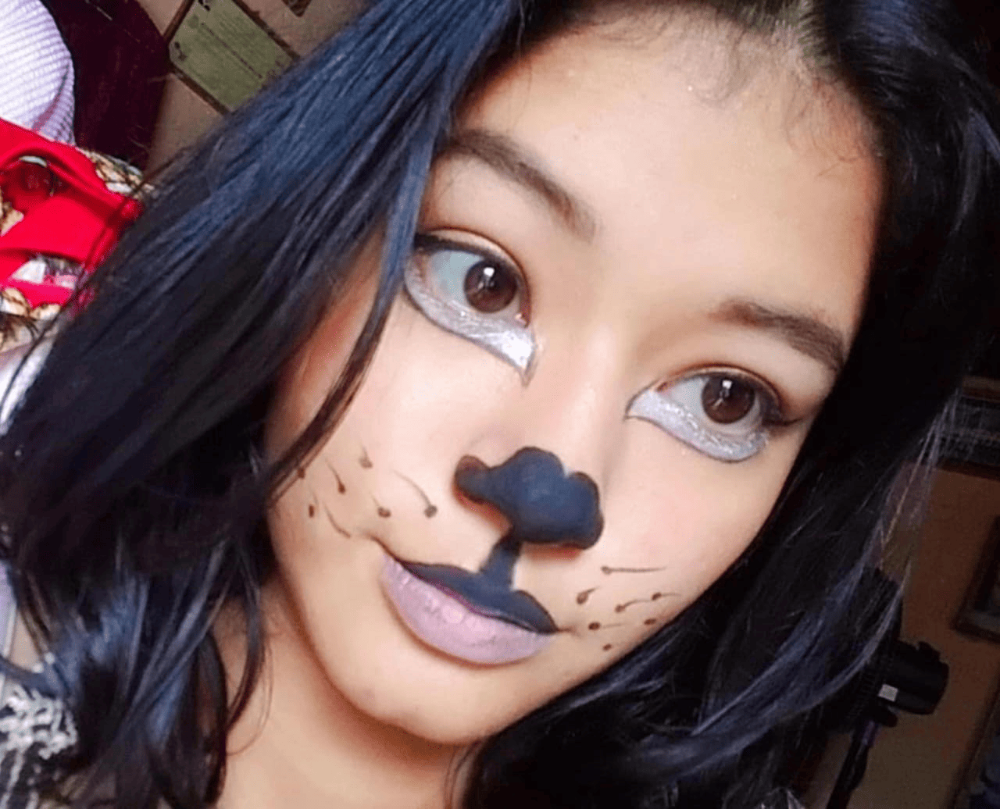
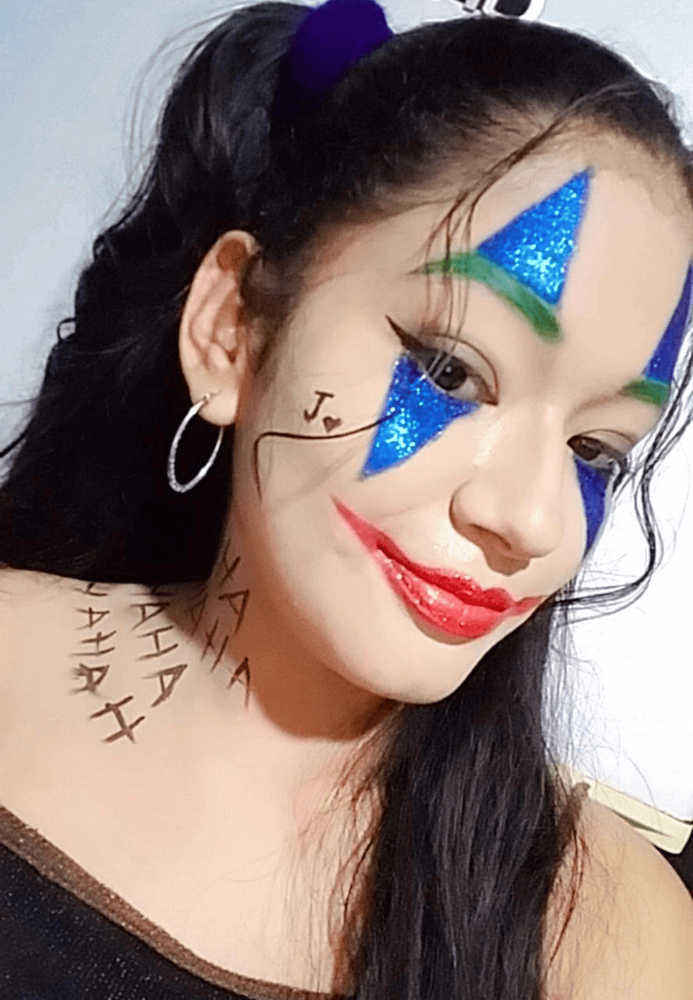
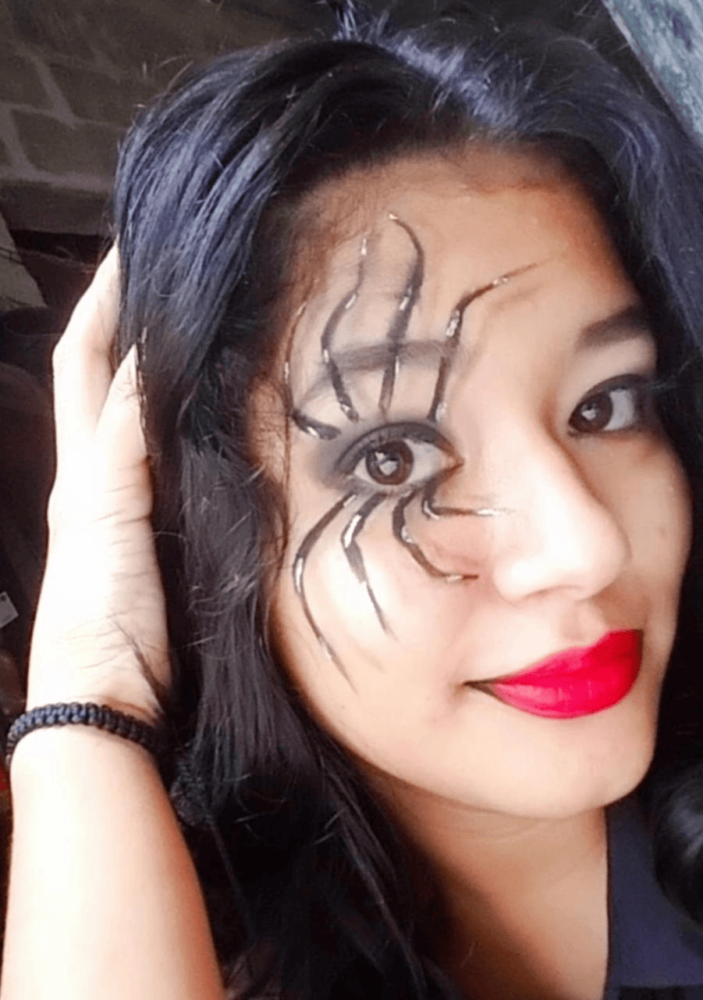
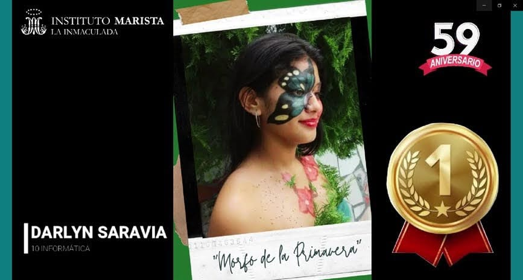
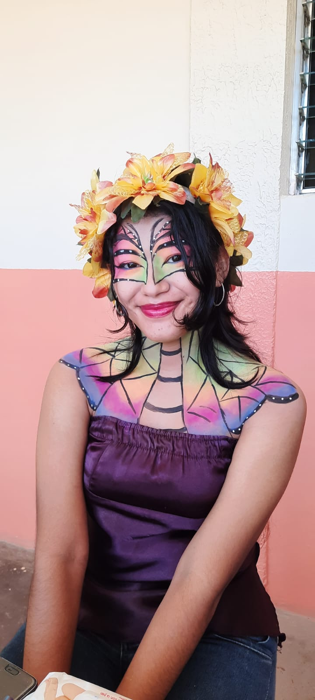

|
Como mencionaba anteriormente, uno de mis principales pasatiempos favoritos es maquillarme,
y es por ello que muestro algunos de los maquillajes artisticos que me he realizado, la
mayoria de ellos los realicé en Octubre, ya que sentia que tenia mas disponibilidad en mi tiempo
y pude enfocarme mucho en los detalles y paciencia que cada uno de ellos requiere.
|
|

|
Este maquillaje representa a una hada, me gusto por su sencillez, y la vivacidad de
los colores que este lleva, colores azules tanto oscuros como claros y toques violetas
con brillos, obviamente como se puede resaltar la corona de flores que llevo puesta
sobre mi cabeza.
|
|

|
Este maquillaje es literalmente la representación de una de mis mayores miedos,
a las arañas, en el cual usé mi color favorito, negro, el cual es muy dificil de difuminar,
ya que requiere de mucha practica y paciencia, cabe destacar que en esta fotografia es
la segunda vez que lo hice, ya que le agregue una tela de araña en el otro ojo, y para darle
un toque gótico los labios negros con brillos amarillos.
|
|

|
Este maquillaje es una recreación de la otra madre, de la película
Coraline, que es la principal antagonista de la historia cuyo origen es desconocido, la
cual vive en un mundo paralelo al de Coraline cruzando por una pequeña puerta en la sala
de estar, al cual es llamado "el otro mundo". En este maquillaje se usa la técnica
de sombreado a modo de achicar mas la cara y hacerla ver huesuda como popularmente se le dice
y para dar un toque de color, el uso de labios rojos y sobre los labios, el caracteristico lunar
de ese ser malvado.
|
|

|
Recreación del maquillaje de Morticia Addams, entrando en contexto
con este personaje, es el corazón, reina y alma de la Familia Addams, se describe como
una vampiresa de piel pálida, cabello negro lacio, que usa vestidos negros góticos para
combinar con su pelo. Volviendo al tema, quise recrear el maquillaje de una Tiktoker famosa,
llamada Dorys Jocelyn Velásquez, la cual es una maquillista profesional y recrea maquillajes
de todo tipo de ocasión, y por supuesto, los maquillajes artísticos, y me llamo mucho la atención
el echo de como fucionó el personaje de Morticia con una catrina, tipos de maquillajes que los
mexicanos usan el día de muertos. Recalco que me fascina trabajar con colores neutros, pero
con el color negro en cualquier tipo de maquillaje es difícil de manejar, pero que con práctica,
dedicación y paciencia, todo se hace mas fácil.
|
|

|
El maquillarte es como utilizar un lienzo blanco en el cual
te dejas guiar por tu imaginación y gustos y comienzas a pintar, esta es una breve descripción
de este maquillaje, ya que quise no lleva un patrón ni guía, simplemente es colorear de la
manera en que gustes, usando cualquier variedad de tonos de colores, sombras, etc.
|
|

|
Quise agregar esta "tierna" fotografía sobre un maquillaje de un animal,
una osa, representación de la fauna de los bosques, creo que ha sido uno de los mas sencillos
y fáciles que he realizado.
|
|

|
El gran Joker, con una personalidad psicópata con humor sádico
y retorcido enemigo de Batman, considero que este ha sido uno de los mejores maquillajes
que me he realizado, tiene buen contraste de colores, y por supuesto que no debía faltar
los toques de brillo. Me he sentido orgullosa de poder hacer a un villano y que haya quedado
perfecto dentro de lo que cabe.
|
|

|
Este fue el primer maquillaje de araña que me realicé, me
inspiré de uno de los maquillajes de la Tiktoker Fer Jalil, ya que ella se encargó de
recrearlo y me llamó mucho la atención, así que decidí intentarlo y salió tal como me lo
esperaba, sobre todo me encanta el efecto de sombreado y lo gótico que luce.
|
|

|
Es uno de mis mayores logros, el haber participado en el concurso
de maquillaje en el colegio en 2021, estabamos en pandemia y las clases eran totalmente
virtuales, tenía miedo porque estaba entre participar o no, pero con el apoyo de personas
muy cercanas a mi, me alentaron para participar, me decidí y así lo hice.
Literalmente me inspiré en dos cosas: la primera, fue en las mariposas, y especificamente las
de especie Morfo, que son mariposas de color azul, y segundo, por las flores ya que me encantan,
y que mejor manera de combiar ambas cosas en un solo maquillaje, al cual le puse por nombre "Morfo
de la primavera" basandome en que a las mariposas les encantan las flores.
Lo que no me esperaba, era ganar el primer lugar, me sentí orgullosa de mi misma, porque
pude demostrar que si puedo hacer lo que me proponga, que soy capaz de mostrarle a muchas
personas lo que sé y sentirme orgullosa de ello.
|
|

|
Para finalizar esta sección de maquillajes, el año pasado(2022)
me animé a participar de nuevo en el concurso de maquillaje, quería seguir demostrando todo
lo que sé, el arte y potencial que tengo, no gané ningún lugar, pero lo importante para mi
fue participar y sentirme feliz de realizar un maquillaje tan colorido y complejo como ese,
tomé referencia de una fotografía de una famosa en maquillaje artístico, simplemente me volví
a sentir orgullosa de mi, porque si logré mi objetivo y es la mejor satisfacción que yo puedo
tener, y seguir demostrándome a mi misma que lo que es pasión para mi, lo demuestre
sin ningún tipo de temor. |